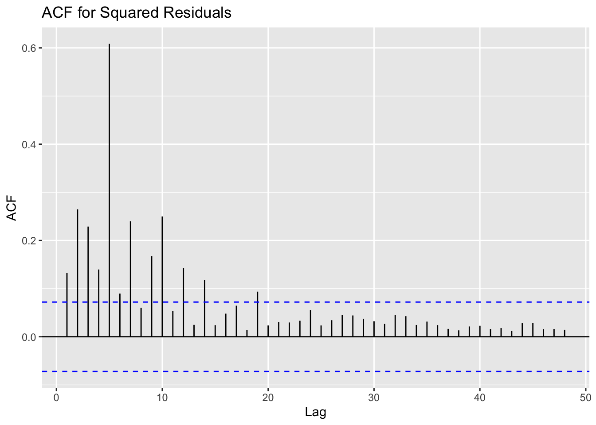
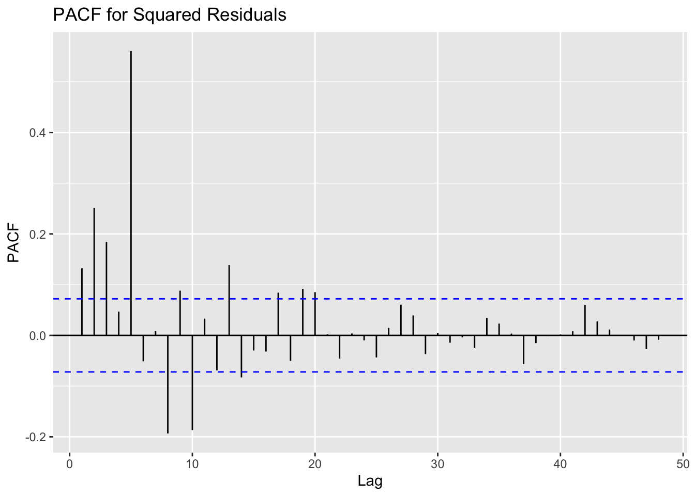
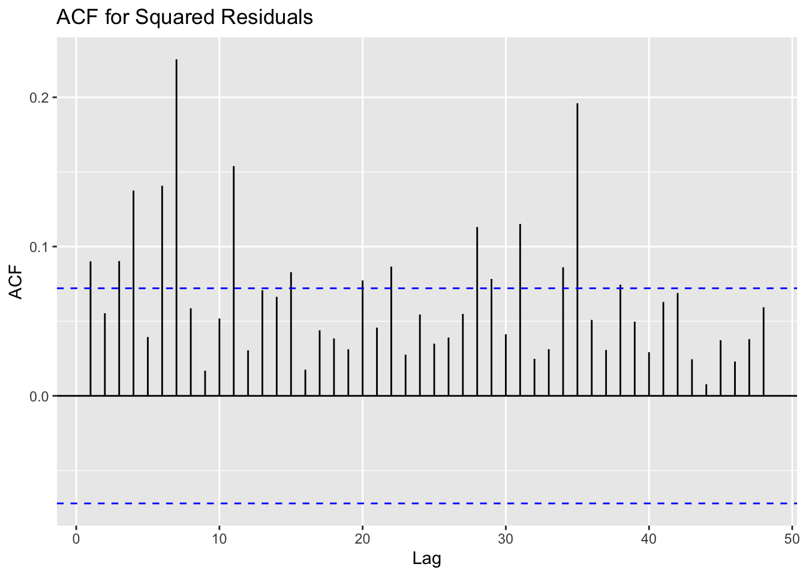
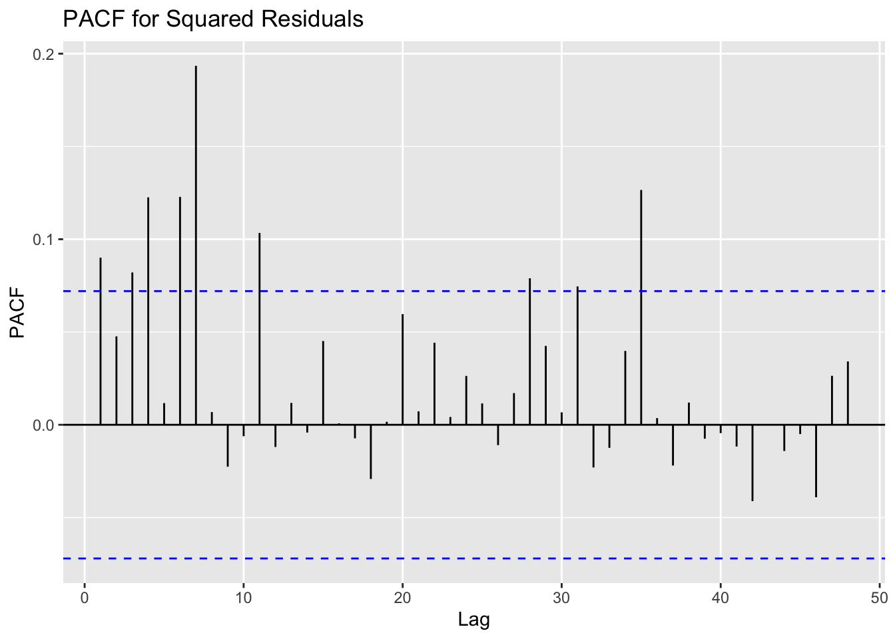

Code
# Fit chosen ARIMA model
fit1 <- Arima(new_cases_ts, order=c(3,1,4))
# Extract resids and its square
resids1 <- fit1$residuals
square_resids1 <- resids1^2In this section, I add an ARCH/GARCH model to the ARIMA model to further fit and predict the daily number of newly confirmed COVID-19 cases and deaths, and try to capture possible clustering of volatility in the data.
ARCH (Autoregressive Conditional Heteroskedasticity) and GARCH (Generalized Autoregressive Conditional Heteroskedasticity) models are commonly used to model financial time series data where there is volatility clustering—periods of swings followed by periods of relative calm. These models are well-suited to series with non-constant variance (heteroskedasticity), which is often observed in financial markets.
For epidemiological data like daily new COVID-19 cases or deaths, it’s possible that similar patterns of volatility could exist. For example, there might be periods of rapid increases or decreases in case numbers due to external factors like new variants, policy changes, or behavioral shifts. If such patterns are present and result in volatility clustering, then using ARCH or GARCH models could be appropriate. In fact, there are many studies using ARCH/GARCH models to predict COVID-19:
Ekinci (2021) utilized ARMA-GARCH models to forecast the daily growth rate of new COVID-19 cases in nine heavily affected countries, highlighting the models’ superior performance over traditional ARMA models due to their ability to capture conditional heteroskedasticity and heavy-tailed distributions (Ekinci, 2021).
In the context of the United Arab Emirates, a study deployed seasonal autoregressive moving average and ARCH models to forecast COVID-19 spread, underscoring the significance of advanced modeling techniques in pandemic management (Kamalov F, Thabtah F., 2021).
Lastly, a South African study by Mthethwa N et al. (2022) employed Markov-switching GARCH-type models with heavy-tailed distributions, focusing on estimating the minimum daily death toll from COVID-19. This research emphasized the similarity between the volatility clustering in COVID-19 death data and financial returns (Mthethwa N, Chifurira R, Chinhamu K., 2022).
According to previous analysis, ARIMA(3,1,4) is the best fit model for Daily New Confirmed Cases in the US.
# Fit chosen ARIMA model
fit1 <- Arima(new_cases_ts, order=c(3,1,4))
# Extract resids and its square
resids1 <- fit1$residuals
square_resids1 <- resids1^2# Plot ACF
ggAcf(square_resids1, 48, main="ACF for Squared Residuals")
# Plot PACF
ggPacf(square_resids1, 48, main="PACF for Squared Residuals")
ArchTest(resids1)
ARCH LM-test; Null hypothesis: no ARCH effects
data: resids1
Chi-squared = 528.8, df = 12, p-value < 2.2e-16I observe significant spikes in the ACF of squared residuals that are outside the confidence bands, and these spikes taper off as the lags increase, this would suggest volatility clustering and potential ARCH effects. The PACF plot also shows significant spikes at the first few lags, it suggests that a GARCH model is more appropriate than an ARCH model.
The result of Arch Test indicates that there is very strong evidence of ARCH effects in the time series residuals. This means that the volatility of the time series data is clustering, and the variance of the residuals is not constant over time but rather depends on the past values of the squared residuals. This further proves my conclusion before.
Given this result, an ARCH or GARCH model may be appropriate to model the time-varying volatility in the data. These models are capable of capturing the observed volatility clustering in time series data, which standard ARIMA models cannot do.
model <- list() ## set counter
cc <- 1
for (p in 1:3) {
for (q in 1:7) {
model[[cc]] <- garch(resids1,order=c(q,p),trace=F)
cc <- cc + 1
}
}
## get AIC values for model evaluation
GARCH_AIC <- sapply(model, AIC)
model[[which(GARCH_AIC == min(GARCH_AIC))]] ## model with lowest AIC is the best and output model summary
Call:
garch(x = resids1, order = c(q, p), trace = F)
Coefficient(s):
a0 a1 a2 a3 b1 b2 b3
4.189e+08 8.722e-02 1.187e-01 1.039e-01 8.217e-03 1.970e-02 1.747e-02
b4 b5 b6 b7
1.644e-02 2.845e-03 3.612e-03 1.489e-06 Although GARCH(3,7) seems to have a smaller AIC, the model is obviously overfitted and leads to numerical instability, which is not the result I want. Therefore, consider a more parsimonious model (fewer parameters) that may perform better.
summary(garchFit(~garch(2,1), resids1, trace = F))
Title:
GARCH Modelling
Call:
garchFit(formula = ~garch(2, 1), data = resids1, trace = F)
Mean and Variance Equation:
data ~ garch(2, 1)
<environment: 0x7f9a66488e48>
[data = resids1]
Conditional Distribution:
norm
Coefficient(s):
mu omega alpha1 alpha2 beta1
1.08129 837.76265 0.83000 1.00000 0.34548
Std. Errors:
based on Hessian
Error Analysis:
Estimate Std. Error t value Pr(>|t|)
mu 1.081e+00 5.257e+00 0.206 0.83705
omega 8.378e+02 8.986e+04 0.009 0.99256
alpha1 8.300e-01 3.069e-01 2.705 0.00684 **
alpha2 1.000e+00 2.532e-01 3.949 7.86e-05 ***
beta1 3.455e-01 2.719e-02 12.704 < 2e-16 ***
---
Signif. codes: 0 '***' 0.001 '**' 0.01 '*' 0.05 '.' 0.1 ' ' 1
Log Likelihood:
-7865.927 normalized: -10.62963
Description:
Fri Dec 8 21:42:09 2023 by user:
Standardised Residuals Tests:
Statistic p-Value
Jarque-Bera Test R Chi^2 3.584037e+05 0
Shapiro-Wilk Test R W 7.070114e-01 0
Ljung-Box Test R Q(10) 1.361311e+02 0
Ljung-Box Test R Q(15) 2.372577e+02 0
Ljung-Box Test R Q(20) 2.815998e+02 0
Ljung-Box Test R^2 Q(10) 1.044666e-01 1
Ljung-Box Test R^2 Q(15) 2.768365e-01 1
Ljung-Box Test R^2 Q(20) 3.529359e-01 1
LM Arch Test R TR^2 1.311712e-01 1
Information Criterion Statistics:
AIC BIC SIC HQIC
21.27278 21.30390 21.27269 21.28478 The GARCH(2,1) model results show a simpler model compared to the previously attempted GARCH(3,7) model.
The result indicates that: The mu coefficient is again not significant, suggesting that the mean of the residuals is not significantly different from zero. The omega coefficient has a very large standard error, indicating instability or issues with the estimation of this parameter. The alpha1 and alpha2 coefficients are significant, suggesting that past squared residuals are important in predicting current volatility. The beta1 coefficient is also significant, implying that past conditional variances are predictive of current conditional variance.
The Ljung-Box test for the residuals (R) shows significant autocorrelation, suggesting that the model might not be fully capturing the temporal structure in the data. The Ljung-Box test for the squared residuals (R^2) and the LM Arch Test show no significant autocorrelation, indicating that the GARCH model is successfully modeling volatility clustering.
Overall, while the GARCH(2,1) model has some issues with the estimation of the omega coefficient, it seems to be a better fit than the more complex models. However, the significant autocorrelation in the residuals suggests that further refinement of the model may be necessary, for example, consider using TGARCH or EGARCH models, but I won’t go into further analysis here.
The equation for the model:
\[\begin{equation} \Delta y_t = 1005.1702 + 0.5033 \Delta y_{t-1} - 0.4148 \Delta y_{t-2} + 0.6132 \Delta y_{t-3} - 0.8180 \epsilon_{t-1} + 0.0383 \epsilon_{t-2} - 0.6115 \epsilon_{t-3} + 0.6630 \epsilon_{t-4} + \epsilon_t \end{equation}\]
\[\begin{equation} \epsilon_t = \sigma_t z_t \end{equation}\]
\[\begin{equation} \sigma_t^2 = 837.76265 + 0.83000 \epsilon_{t-1}^2 + 1.00000 \epsilon_{t-2}^2 + 0.34548 \sigma_{t-1}^2 \end{equation}\]
According to previous analysis, ARIMA(5,1,2) is the best fit model for Daily New Confirmed Deaths in the US.
# Fit chosen ARIMA model
fit2 <- Arima(new_deaths_ts, order=c(5,1,2))
# Extract resids and its square
resids2 <- fit2$residuals
square_resids2 <- resids2^2# Plot ACF
ggAcf(square_resids2, 48, main="ACF for Squared Residuals")
# Plot PACF
ggPacf(square_resids2, 48, main="PACF for Squared Residuals")
ArchTest(resids2)
ARCH LM-test; Null hypothesis: no ARCH effects
data: resids2
Chi-squared = 68.057, df = 12, p-value = 7.385e-10Combining the visual evidence from the ACF and PACF plots with the statistical evidence from the ARCH LM test, it is clear that there are ARCH effects present in the residuals.
model <- list() ## set counter
cc <- 1
for (p in 1:1) {
for (q in 1:1) {
model[[cc]] <- garch(resids2,order=c(q,p),trace=F)
cc <- cc + 1
}
}
## get AIC values for model evaluation
GARCH_AIC <- sapply(model, AIC)
model[[which(GARCH_AIC == min(GARCH_AIC))]] ## model with lowest AIC is the best and output model summary
Call:
garch(x = resids2, order = c(q, p), trace = F)
Coefficient(s):
a0 a1 b1
8.485e+04 5.294e-01 4.663e-10 summary(garchFit(~garch(1,1), resids2, trace = F))
Title:
GARCH Modelling
Call:
garchFit(formula = ~garch(1, 1), data = resids2, trace = F)
Mean and Variance Equation:
data ~ garch(1, 1)
<environment: 0x7f9a61c8c2b0>
[data = resids2]
Conditional Distribution:
norm
Coefficient(s):
mu omega alpha1 beta1
0.028830 0.094282 1.000000 0.587135
Std. Errors:
based on Hessian
Error Analysis:
Estimate Std. Error t value Pr(>|t|)
mu 0.028830 0.080063 0.36 0.719
omega 0.094282 NaN NaN NaN
alpha1 1.000000 0.017914 55.82 <2e-16 ***
beta1 0.587135 0.009125 64.34 <2e-16 ***
---
Signif. codes: 0 '***' 0.001 '**' 0.01 '*' 0.05 '.' 0.1 ' ' 1
Log Likelihood:
-4855.116 normalized: -6.560968
Description:
Fri Dec 8 21:42:10 2023 by user:
Standardised Residuals Tests:
Statistic p-Value
Jarque-Bera Test R Chi^2 5.895898e+04 0.000000e+00
Shapiro-Wilk Test R W 7.684892e-01 0.000000e+00
Ljung-Box Test R Q(10) 4.009290e+01 1.631816e-05
Ljung-Box Test R Q(15) 6.727345e+01 1.360363e-08
Ljung-Box Test R Q(20) 8.478714e+01 5.956960e-10
Ljung-Box Test R^2 Q(10) 5.722002e-01 9.999874e-01
Ljung-Box Test R^2 Q(15) 7.869662e-01 1.000000e+00
Ljung-Box Test R^2 Q(20) 9.989590e-01 1.000000e+00
LM Arch Test R TR^2 7.388805e-01 9.999974e-01
Information Criterion Statistics:
AIC BIC SIC HQIC
13.13275 13.15765 13.13269 13.14235 The output provided from the GARCH(1,1) modeling procedure includes several important components that give us insights into the fitted model’s performance:
The mu coefficient is not significant with a p-value of 0.719, implying that the conditional mean is not different from zero. The omega coefficient has a problem as its standard error is not available (NaN). This could be a result of numerical issues during optimization or model misspecification. The alpha1 coefficient is at the boundary of the parameter space, being exactly 1. This could indicate a model at the edge of stationarity or nonstationarity in variance, and this could be a sign of the Integrated GARCH (IGARCH) effect, where shocks have a persistent effect on volatility. The beta1 coefficient is significant and less than one, suggesting that past conditional variances do have an impact on current variance, but the effect is not indefinitely persistent.
The Ljung-Box tests on the residuals R show significant autocorrelations at various lags, suggesting that the GARCH(1,1) model may not be adequately capturing all the dependencies in the data. The Ljung-Box tests on the squared residuals R^2 and the LM Arch Test do not show significant results (p-value ~ 1), indicating no autocorrelation in the squared residuals. This suggests that the GARCH(1,1) model is capturing the volatility clustering in the data.
Given the output, while the GARCH(1,1) model captures the volatility clustering (as indicated by the non-significant Ljung-Box tests on squared residuals), the issue with omega needs to be addressed. The significance of alpha1 and beta1 suggests that the model is capturing the dynamics of volatility, but the perfect boundary value of 1 for alpha1 could be problematic, indicating that the model might better be specified as an IGARCH model. Additionally, the significant autocorrelations in the residuals suggest that the mean model might need to be expanded or that there are other forms of temporal dependencies not captured by the current model.
The equation for the model:
\[\begin{equation} \Delta y_t = 2.4559 + 0.5145 \Delta y_{t-1} - 0.7522 \Delta y_{t-2} - 0.1719 \Delta y_{t-3} - 0.3084 \Delta y_{t-4} - 0.2779 \Delta y_{t-5} - 1.0594 \epsilon_{t-1} + 0.7524 \epsilon_{t-2} + \epsilon_t \end{equation}\]
\[\begin{equation} \epsilon_t = \sigma_t z_t \end{equation}\]
\[\begin{equation} \sigma_t^2 = 0.094282 + 1.000000 \epsilon_{t-1}^2 + 0.587135 \sigma_{t-1}^2 \end{equation}\]